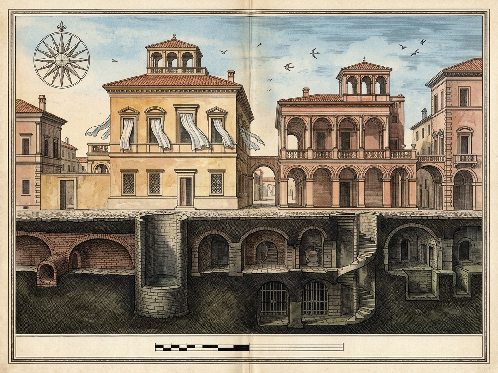
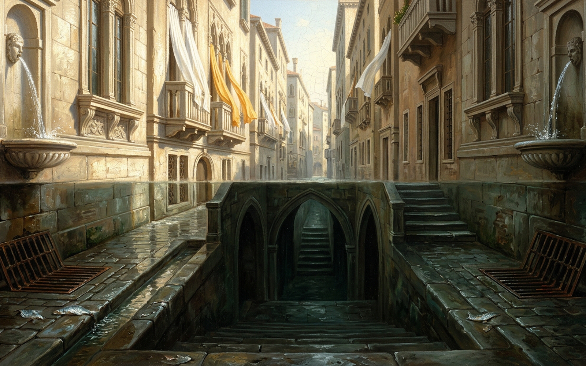

Zemrude — City of the Inclined Eye
It is the mood of the one who looks that gives the city its form.
Direct Sunlit Sight
1Window Sills (6)
2Flapping Curtains (6)
3Rooftop Fountains (4)
WWhistle Nose-Up
3 of 16 upper stones held in memory · clarity 92%
Drag up or down to tilt the eye · click a stone to inspect
+35.8° · zenith
×
Upper stone
—
Habit-Gravity Ratchet
Each day on the same streets leaves yesterday's ill-humor caked at the foot of the walls; the eye slides down the drainpipes and will not easily lift.
+65° Zenith
+35.8°
stratum: zenith
0° Drainpipes
−90° Wells
Same streetDay 1
Rare reversals0
Encrusted Ill-Humor8%
Upward Lift Resistance14%
Walk Same Street (+1 Day)Space / N
Hang Head & Clench PalmsG
Whistle UpwardW
Auto-Habit DriftH
Sound OnA
ResetR
Royal PlatesP
Lower Register — Paving, Cellars, Wells
deepest reached: zenith
4Gutters
5Manhole Grilles
6Fish Scales
7Wastepaper
8Cellars
9Foundations
0Deep Wells
DDig Deeper
Neither of the two cities is truer than the other oneAspectTruer = false; yet the upper city is heard of chiefly from those who, sunk below, remember it.
Royal Plates
Diptych
Cartographic Map
Architectural Vista
ZLoupe 1.8×
EscClose
Cartographic plate — the upper and the lower city on one sheet.

Architectural vista — sills aloft, gutters underfoot.
